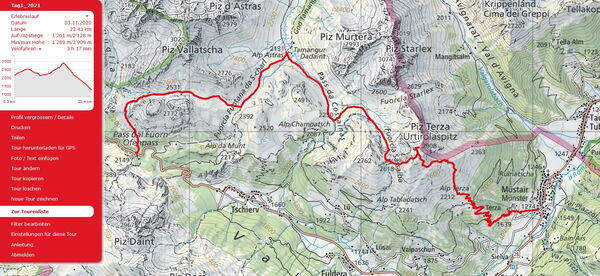
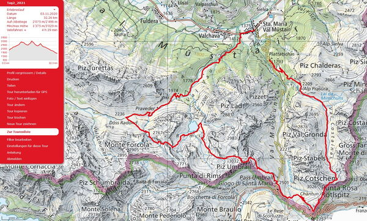
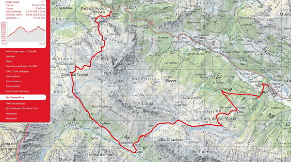
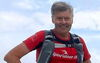

Erlebnislauf Münstertal
Münstertal
Vom 27. bis 29. August laufen wir in 3 Tagen auf herrlichen Trails im Münstertal.
Wir laufen in 3 Gruppen nach Stärkeklassen. Trailrunning im Wohlfühlbereich. Das Tempo passen wir dem Gelände an und geniessen dabei die schöne Landschaft. Wir haben auch Zeit um Pausen einzulegen. Ist das Gelände eben oder sogar abfallend so sind wir im Laufschritt unterwegs. Steilere Aufwärtspassagen werden auch in zügigem Wanderschritt bewältigt.
Rückblick Erlebnsilauf von Christian Schmid
Ofenpass - Müstair

Ofenpass - Alp Astras - Piz Terza - Alp Terza - Müstair
23.4 Km + 1200 / -2100 hm Daten.gpx / zur Strecke auf SchweizMobil
Der Treffunkt zum Erlebnislauf befindet sich beim Bahnhof Zernez. Mit dem Postauto fahren wir gemeinsam durch den Schweizer Nationalpark zum Ofenpass zum Start der ersten Etappe. Nach der Gruppeneinteilung nach Stärkeklassen laufen wir in 3 Gruppen mit je 2 ortskundigen Leitern los in Richtung Alp Astras und weiter zum Piz Terza, (wer möchte kann noch auf den Gipfel). Herrliche Aussichten sind garantiert hoch über dem Münstertal. Und wer die Augen gut offenhällt wird Edelweisse am Wegrand sehen. Das Ziel der ersten Tour befindet sich in Müstair. Wir verbringen zwei Nächte im Hotel Liun und Hotel Chavalatsch. Die Besprechung der Tour vom zweiten Tag erfolgt nach dem Nachtessen im Hotel Chavalatsch.
Margun - Umbrail - Sta. Maria

Margun - Val Costainas - Stilfserjoch - Piz Umbrail - Lai da Rims - Val Vau - Sta. Maria
32 Km +2000 hm / -2400 hm Daten.gpx / zur Strecke auf SchweizMobil
Die Königsetappe schlechthin! Wir starten mit einer Busfahrt in Richtung Stilfserjoch. In drei Gruppen nach Stärkeklassen laufen wir bei der Haltestelle Plattatschas los zu spektakulären Bergtrails. Wir laufen das Val Costainas hoch am Piz Cotschen vorbei mit Blick auf den höchsten Berg Südtirols: den Ortler 3905m, weiter zum Umbrailpass und hoch zum Piz Umbrail auf 3032m. Ein schöner Abstieg führt uns zum Lai da Rims, einem der schönsten Bergseen der Schweiz, dann noch ein letzter kurzer Aufstieg. Nun folgen wir dem Val Vau runter bis nach Sta. Maria. Die letzten flachen Kilometer nach Müstair sparen wir uns nach dieser aufregender und anstrengenden Etappe und nehmen das Postauto. Im Hotel wird nach dem Nachtessen die Tour vom Sonntag besprochen.
Es besteht die Möglichkeit eine kürzere Strecke zu laufen: Postautofahrt bis Umbrailpass, dann dieselbe Strecke bis Sta. Maria ca. 20 Km + 700hm / -1700 hm
Fuldera - Val Mora - Ofenpass

Fuldera - Lai da Chazfora - Val Mora /Alp Mora - Döss dal Termel - Murtaröl - Ofenpass
19 Km +1700 hm / -1200 hm Daten.gpx / zur Strecke auf SchweizMobil
Nach der Busfahrt von Müstair nach Fuldera starten wir zur 3. Etappe. Wir laufen hoch zur Alp Sadra und dem Wanderweg folgend zum Lai da Chazfora. Nach 600 Meter Abstieg befinden wir uns im berühmten Val Mora, vorbei an der Alp Mora steigen wir wieder hoch gegen Döss dal Termel. Am Piz Daint vorbei, mit etwas Glück sehen wir dort Steinböcke, und weiteren Edelweissen. Beim Il Jalet gehts in den letzten Abstieg gegen den Ofenpass zum Ziel des 3tägigen Erlebnislaufes. Es erwartet uns ein z'Vieri beim Hotel Süsom Givè. Das Gepäck wird uns von Müstair zum Ofenpass gebracht. Das Postauto bringt uns dann zurück nach Zernez.

Laufleiter
Die Laufleiter werden die Strecken vorgängig ablaufen und kennen die Trails - Pro Gruppe sind jeweils zwei Leiter dabei
8 Laufleiter begleiten euch
-

-

-

-

-

-

-

Laufleiter Erlebnislauf
- Marco Jäger, Chur
- Petra Jäger, Chur
- Joschi Furrer, Zug
- Brigitte Eggerling, Chur
- Dani Zähner, Felsberg
- Michi Gisler, Bonaduz
- Dani Bolt, Domat / Ems
- Martin Lüönd, Chur
angemeldete Teilnehmer
- Ursula Baer, Hägendorf
- Urs Ullmann, St.Niklausen
- Ruedi Wirz, Felsberg
- Barbara Miller, Horgen
- Irene Breitmaier, Wädenswil
- Isabel Meier, Horgen
- Iseli Verena , Kilchberg
- Donat Hunger, Wetzikon
- Doris Schwarz, Cham
- Katharina Fodor, Untervaz
- Rolf Bianco, Untervaz
- Olivia Bissegger, Vaduz
- Martin Lüönd, Chur
- Isabella Lüönd, Chur
- Adrian Dörig, Zürich
- Deborah Tunik Dörig, Zürich
- Iris Capatt, Chur
- Martin Ledermann, Chur
- Nartano Kottmann, Baar
- Sven Dudli, Chur
- Aline Schnider , Chur
- Jean-Marie Zogg, Bonaduz
- Christine Cantieni, Donat
- Sebastian Reich, Riedern
- Christian Schmid, Wettingen
- Thomas Steger, Zürich
- Gion Hagmann, Chur
- Käthi Pfister, Chur
- Arnold Grischott, Paspels
- Daniel Ulrich, Zug